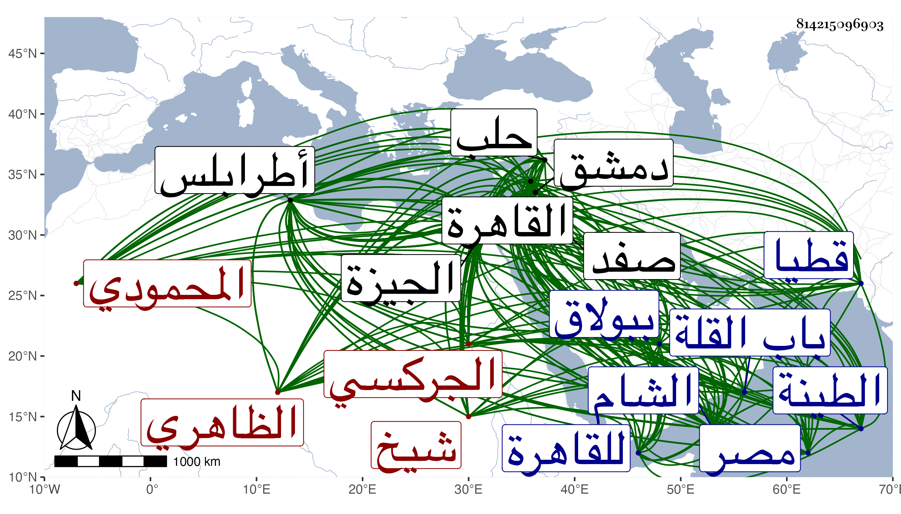

0902Sakhawi.DawLamic.ITO20230111-ara1.EIS1600.814215096903
Biography ID: 814215096903
1190
شيخ المحمودي ثم الظاهري برقوق المؤيد أبو النصر الجركسي الأصل . ولد تقريبا سنة سبعين وسبعمائة فإنه فيما سمعه منه شيخنا مما ذكره في إنبائه ومعجمه كان قدومه للقاهرة في أول سنة ثلاث وثمانين أو آخر التي قبلها في السنة التي قدم فيها أنص والد الظاهر برقوق وهو ابن اثنتي عشرة سنة فعرض وهو جميل الصورة على الظاهر فقبل تسلطنه فرام شراءه من جالبه فاشتط في الثمن ولم يلبث أن مات فاشتراه الخواجا محمود شاه اليزدي تاجر المماليك بثمن يسير فنسب محموديا لذلك وقدمه لبرقوق وهو حينئذ أتابك العساكر فأعجبه فأعتقه ونشأ ذكيا فتعلم الفروسية من اللعب بالرمح ورمى النشاب والضرب بالسيف والصراع وسباق الخيل وغير ذلك ومهر في جميع ذلك مع جمال الصورة وكمال القامة وحسن العشرة وأول ما كان في الكتابية ثم في الخاصكية ثم في السقاة ، واختص بسيده إلى الغاية مع غضبه عليه بسبب نهيه غير مرة عن التهتك والميل إلى اللهو والطرب ولكن لم يعزله عن وظيفته ولا أبعده ثم أنعم عليه بامرة عشرة في سلطنته الثانية بعد وقعة شقحب وذلك في ثاني عشري صفر سنة أربع وتسعين ، وكان ممن سجن قبل ذلك من مماليكه في فتنة منطاش بخزانة شمائل ونذر حينئذ إن نجاه الله تعالى منها أن يجعلها مسجدا ففعل ذلك في سلطنته بعد بضع وعشرين سنة وتأمر على الحاج سنة إحدى وثمانمائة بعد موت أستاذه وناب في طرابلس ولما نازل اللنك حلب خرج مع العساكر فأسر ثم خلص من اللنك بحيلة عجيبة وهي أنه لما أسر استمر في أسر اللنكية إلى أن فارقوا دمشق ثم رجعوا فاغتنم وقت رحيلهم وألقى نفسه بين الدواب وستره الله فمشى إلى قرية من عمل صفد ثم توصل إلى طرابلس وركب البحر إلى الطينة ثم مشى في البر إلى قطيا فبالغ الوالي في إكرامه بعد أن كان جفاه لكونه لم يعرفه واعتذر وقدم له خيلا فركب ودخل القاهرة وأعيد كما كان أولا لنيابة طرابلس ثم ولي نيابة الشام وجرت له من الخطوب والحروب ما ذكر في الحوادث بل وأشير إليه في ترجمته من تاريخ ابن خطيب الناصرية ، وكذا ذكر شيخنا بعضه في معجمه وملك وكانت مدة كونه في السلطنة ثمان سنين وخمسة أشهر وثمانية أيام وأقام في الملك عشرين سنة ما بين نائب ومتغلب وأتابك وسلطان قال شيخنا وكان شهما شجاعا عالي الهمة كثير الرجوع إلى الحق محبا في العدل متواضعا يعظم العلماء ويكرمهم ويحسن إلى أصحابه ويصفح عن جرائمهم يحب الهزل والمجون لكن مستترا ومحاسنه جمة ، وقال في معجمه أنه حدث بصحيح البخاري عن السراج البلقيني بأجازة معينة أخرجها بخطه وذكر أنها كانت معه في أسفاره لا يفارقها وحضرنا عنده عدة مجالس ، وكان يحب العلماء ويجالسهم ويكرمهم ويعظم الشرع وحملته وكان مفرطا في الشجاعة محبا في الصلاة لا يقطعها وإن عرض له عارض بادر إلى قضائها ، قال وافتتح حصونا وخطب له بقيسارية ثم جهز ولده إبراهيم فظفر بابن قرمان وأحضروه أسيرا ولما أصابته عين الكمان مات ابنه إبراهيم ثم مات هو بعده بقليل وذلك في أول المحرم سنة أربع وعشرين قال وقد ذكرت في الوفيات كثيرا من محاسنه وما كان يعاب به وأين أين مثله سامحه الله وعفا عنه ، وقال العيني في تاريخه : لما مات كان في الخزانة ألف ألف دينار وخمسمائة ألف دينار من الذهب على ما قيل فلم تمض السنة وفيها دينار واحد ، قال وهو من طائفة من الجراكسة يقال لهم كرموك ويقال انه من ذرية اينال بن ركماس ابن سرماس بن طحا بن جرباش بن كرموك وكان كرموك كبير طائفته وكذلك نسله ، وعمل العيني في سيرته أرجوزة سماها الجوهر انتقد منها شيخنا ما أفرده في جزء سماه قذى العين من يعيب غراب البين وكذا أفردها ابن ناهض في مجلد حافل قرضه له كل عالم وأديب ومؤرخ وحبيب ، وقال ابن خطيب الناصرية وترجمته في تاريخه أكثر من كراس ونصف انه كان ملكا مهيبا ماجدا أديبا جوادا عالي الهمة جليل المقدار عفيفا عن الأموال تام الشكل واسع الصدر خفيف الركاب مظفرا في الوقائع يملأ العين ويرجف القلب ذا سطوة عظيمة وحلم وأناة وصبر وإقدام وخبرة كاملة انتهى ، وتكرر نزوله في سنة اثنتين وعشرين إلى بيت الناصري بن البارزي ببولاق ، وعام في البحر غير متستر مع ما به من ألم رجليه وضربان المفاصل وقال المقريزي : كان شجاعا مقداما يحب أهل العلم ويجالسهم ويجل الشرع النبوي ويذعن له ولا ينكر على الطالب منه أن يمضي من بين يديه إلى قضاة الشرع بل يعجبه ذلك وينكر على أمرائه معارضة القضاة في أحكامهم غير مائل إلى شيء من البدع له قيام في الليل إلى التهجد أحيانا لكنه كان بخيلا مسيكا يشح حتى بالأكل لجوجا غضوبا نكدا حسودا معيابا يتظاهر بأنواع المنكرات فحاشا سبابا بذيئا شديد المهابة حافظا لأصحابه غير مفرط فيهم ولا مضيع لهم وهو أكبر أسباب خراب مصر والشام لكثرة ما كان يثيره من الشرور والفتن أيام نيابته بطرابلس ودمشق ثم ما أفسده في أيام ملكه من كثرة المظالم ونهب البلاد وتسليط أتباعه على الناس يسومونهم الذلة ويأخذون ما قدروا عليه بغير وازع من عقل ولا ناه من دين وأرخ وفاته بعد تنوع الاسقام وتزايد الآلام قبيل ظهر يوم الاثنين تاسع المحرم وقد أناف على الخمسين ، وصلى عليه خارج باب القلة ، وحمل إلى جامعه فدفن بالقبة قبيل العصر ، ولم يشهد دفنه كبير أحد من الأمراء والمماليك ، قال واتفق في امره موعظة فيها أعظم عبرة ، وهو انه لما غسل لم توجد له منشفة ينشف بها فنشف بمنديل بعض من حضر غسله ولا وجد له مئزر تستر به عورته حتى أخذ له مئزر صوف صعيدي من فوق رأس بعض جواريه فستر به ولا وجد له طاسة يصب عليه الماء بها حين غسله مع كثرة ما خلفه من المال . قلت وله مآثر كالجامع الذي بباب زويلة قيل انه لم يعمر في الاسلام أكثر منه زخرفة ولا أحسن ترخيما بعد الجامع الأموي ، وأصله خزانة شمائل توفية لنذره ، وكذا عمل خطبة بالمقياس من الروضة وله المدرسة الخروبية بالجيزة وعدة سبل ومكاتب ، وعمل جسرا تجاه منشية المهراني ونزل بنفسه في مخيم هناك وعمر منظرة الخمس وجوه التي بالقرب من التاج الخراب صرف عليها شيئا كثيرا ورام انشاء بستان حوله فما تم إلى غير ذلك وترجمته نحو كراسين من عقود المقريزي
